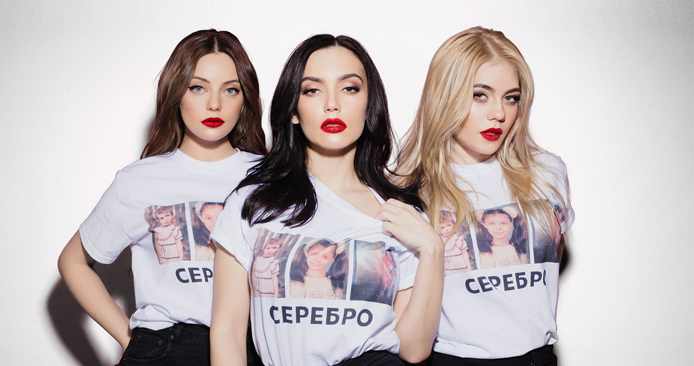

На нашем сайте вы найдете историю создания группы, информацию об участниках, репертуар группы. Формирование первого состава группы После того, как Елена Темникова приняла участие во втором сезоне телепроекта «Фабрика Звёзд», она стала сотрудничать с продюсером Максимом Фадеевым. В ходе работы Темникова решила сформировать женскую группу, преимущественно из трёх человек. С 2005 года начался поиск двух будущих солисток группы. Ольга Серябкина работала бэк-вокалисткой у подопечного Фадеева — Иракли, где она и познакомилась с Еленой Темниковой. Завязалась дружба, и Елена пригласила Ольгу на прослушивание в группу. Третью участницу группы, Марину Лизоркину, Максим Фадеев нашёл в Интернете. Дебютное выступление группы состоялось в финале конкурса песни «Евровидение-2007», куда она была отправлена в качестве представителя от России. В финале коллектив занял третье место с песней «Song #1». Это учебный сайт демонстрационного содержания. Его цель - отработка технологии разметки гипертекстовых документов с помощью языка HTML. Более полную информацию вы найдете на других сайтах. Приносим свои извинения.